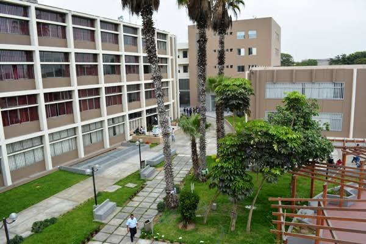
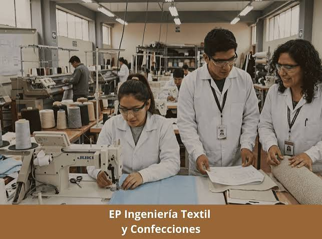

Misión
Ser referente nacional e internacional en la formación a nivel de pregrado y posgrado de Ingenieros Industriales, Ingenieros Textiles y de Confecciones, e Ingenieros de Seguridad y Salud en el Trabajo, idóneos en la aplicación y generación de conocimiento con alta calidad educativa; comprometidos en el desarrollo sostenible y sustentable.
Visión
Ser referente nacional e internacional en la formación a nivel de pregrado y posgrado de Ingenieros Industriales, Ingenieros Textiles y de Confecciones, e Ingenieros de Seguridad y Salud en el Trabajo, idóneos en la aplicación y generación de conocimiento con alta calidad educativa; comprometidos en el desarrollo sostenible y sustentable.
Escuelas Profesionales
- Ingeniería Industrial
- Ingeniería Textil y de Confecciones
- Ingeniería de Seguridad y Salud en el Trabajo

